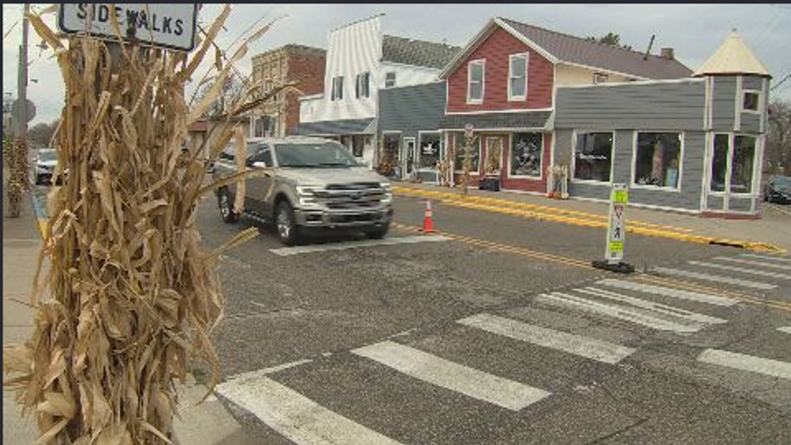

Moving to Beloit, WI: Your New Home Awaits
Nestled in the rolling countryside of southern Wisconsin, Orfordville is a village that embodies the essence of small-town America. With its rich agricultural roots, tight-knit community, and serene rural landscapes, Orfordville offers a peaceful and welcoming environment that’s perfect for those looking to escape the hustle and bustle of city life. Whether you're seeking a quiet place to raise a family, retire, or simply enjoy a slower pace of life, Orfordville has much to offer.
Why Chose Orfordville?
Orfordville is more than just a place to live; it’s a community where neighbors know each other by name, and local traditions run deep. With a population of around 1,500, Orfordville offers the best of rural living, with the added convenience of being close to larger cities like Janesville and Beloit.
- Affordable Living. One of the biggest draws to Orfordville is its affordability. The village offers a range of housing options, from charming historic homes to newer developments, all at prices that are often lower than those in nearby urban areas. This makes Orfordville an ideal place for families, first-time homebuyers, and retirees who want to enjoy the comforts of small-town living without breaking the bank.
- A Strong Community. Community is at the heart of life in Orfordville. The village hosts a variety of events throughout the year, from farmers' markets and community fairs to local sports leagues and holiday celebrations. These events bring residents together, fostering a strong sense of belonging and pride in the community. Whether you’re attending a pancake breakfast at the local fire department or cheering on the Parkview Vikings at a high school football game, you’ll quickly feel like part of the Orfordville family.
- Rural Wisconsin. Orfordville is surrounded by the natural beauty of southern Wisconsin's rural landscape. The village is located in a region known for its fertile farmland, rolling hills, and scenic country roads. For those who love the outdoors, Orfordville offers plenty of opportunities to explore, from biking and hiking to fishing in nearby lakes and streams. The village’s peaceful setting provides a perfect backdrop for a relaxed, outdoor-oriented lifestyle.
Exploring the Neighborhoods
Orfordville may be small, but it’s a village full of character. The residential areas are filled with tree-lined streets, well-maintained homes, and friendly neighbors. Whether you prefer the historic charm of downtown Orfordville or the spacious lots on the outskirts of the village, you’ll find a neighborhood that suits your lifestyle.
Interested in Moving?
Moving to Orfordville means embracing the simplicity and charm of rural living, without sacrificing the conveniences of modern life. With its affordable housing, strong sense of community, and beautiful natural surroundings, Orfordville is an ideal place to start your next chapter. Whether you’re looking to put down roots in a close-knit village or enjoy a peaceful retirement, Orfordville offers a welcoming community that’s ready to greet you with open arms. Contact us today to learn more about life in Orfordville and how you can make this charming village your new home.